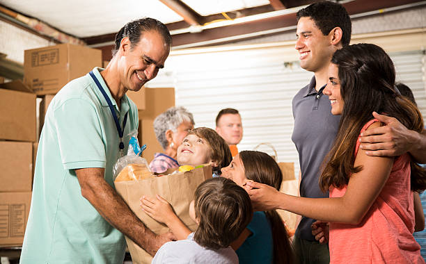
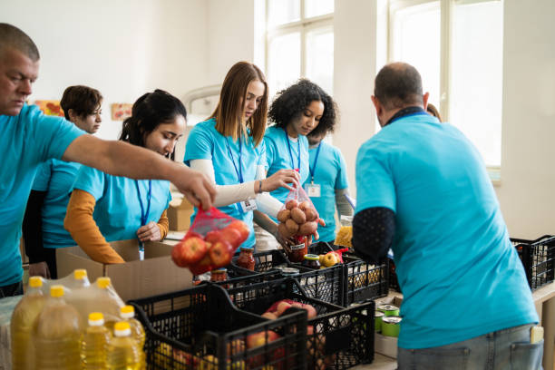

Nossa História: Um Laço de Esperança
A Laços do Bem nasceu em 2022, no coração de um grupo de amigos que se uniu diante da realidade dura da fome em sua própria comunidade...
Com o tempo, o projeto cresceu — novas mãos se juntaram, empresas locais passaram a colaborar...
Nosso compromisso vai além da doação: buscamos construir uma rede permanente de apoio...
Projeto Dignidade na Mesa Ação Contínua
Todo nosso esforço se concentra no **"Projeto Dignidade na Mesa"**...
-
Arrecadação: Onde a Comunidade se Une
Nossa força começa com você... -
Logística: O Cuidado por Trás da Cesta
Receber as doações é só o começo... -
Distribuição: O Encontro que Transforma
Este é o momento em que o "laço" se completa...
Nossas Ações em Imagens


Transparência: Nosso Compromisso
A confiança é a base do nosso trabalho...
| Ano | Relatório | Link (PDF) |
|---|---|---|
| 2024 | Relatório Semestral (S1) | Baixar |
| 2023 | Relatório Anual de Atividades | Baixar |
Gráfico de Investimento (Exemplo)
Veja como os recursos são aplicados (dados do último semestre).